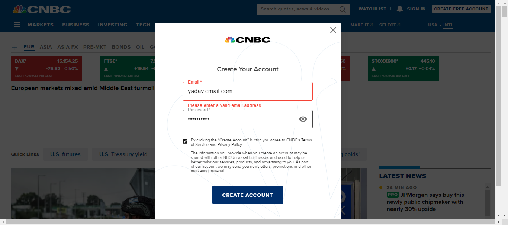
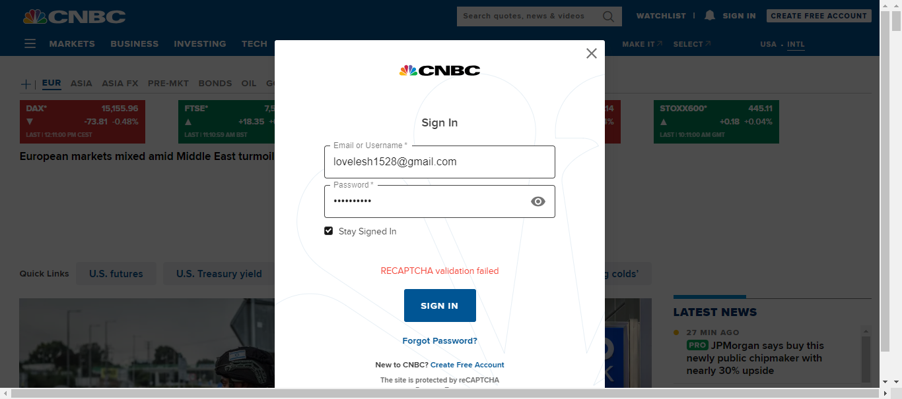
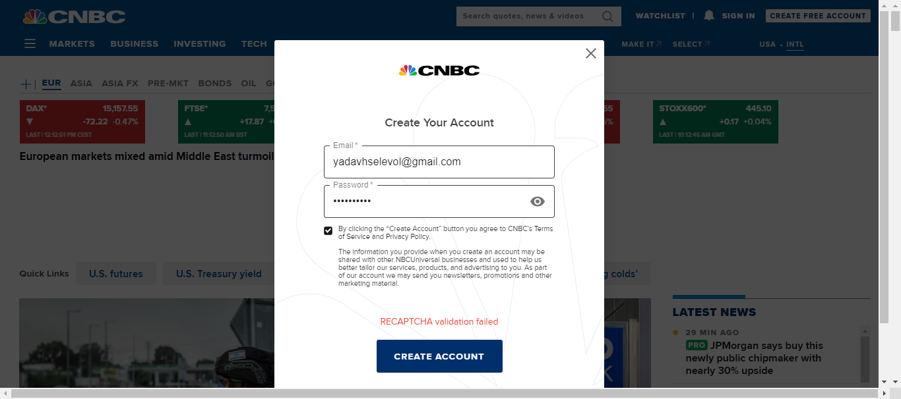

-
Create free account & sign in Account
3:49:23 PM / 00:04:05:374 Fail
Create free account & sign in Account
10.09.2023 3:49:23 PM 10.09.2023 3:53:28 PM 00:04:05:374 · #test-id=1Failverify user able to create account in CNBCGiven User launch browserWhen user opens URL "https://www.cnbc.com/"And click on sign in button in CNBC dashboardAnd click on create free account link in sign in pageAnd enter valid email address "yadavhselevol@gmail.com"And enter valid password "Lovelesh1*"And select the checkbox to accept CNBC terms of service and privacy policyAnd click on create account buttonThen verify system displaying message "Thank you for creating a CNBC account ."StepDefinitions.CreateAccountAndSignin.addScreenshot(io.cucumber.java.Scenario)verify user able to create account in CNBCWhen click on done buttonStep skippedPassverify system throwing error message when existing user trying to create accountGiven User launch browserWhen user opens URL "https://www.cnbc.com/"And click on sign in button in CNBC dashboardAnd click on create free account link in sign in pageAnd enter valid email address "yadav.lovelesh15@gmail.com"And enter valid password "Lovelesh1*"And select the checkbox to accept CNBC terms of service and privacy policyAnd click on create account buttonThen verify system throwing error message "An account with this email address already exists."Failverify system throwing error message when user trying to create account with invalid emailGiven User launch browserWhen user opens URL "https://www.cnbc.com/"And click on sign in button in CNBC dashboardAnd click on create free account link in sign in pageAnd enter valid email address "yadav.cmail.com"And enter valid password "Lovelesh1*"And select the checkbox to accept CNBC terms of service and privacy policyAnd click on create account buttonThen verify system displaying error message "Please enter a valid email address."StepDefinitions.CreateAccountAndSignin.addScreenshot(io.cucumber.java.Scenario)verify system throwing error message when user trying to create account with invalid emailPassverify system throwing error message when user trying to create account without accepting terms and conditionsGiven User launch browserWhen user opens URL "https://www.cnbc.com/"And click on sign in button in CNBC dashboardAnd click on create free account link in sign in pageAnd enter valid email address "samual@gmail.com"And enter valid password "Lovelesh1*"And click on create account buttonThen verify system throwing the error message "Please agree to the following terms to continue." when user not selected terms and conditions checkboxPassverify system throwing error message when user clicks create account button without filling email and password fieldsGiven User launch browserWhen user opens URL "https://www.cnbc.com/"And click on sign in button in CNBC dashboardAnd click on create free account link in sign in pageAnd click on create account buttonThen verify system displaying error message "Email is required"And verify system displaying error message "Please enter a valid password" -
sign in to CNBC
3:53:28 PM / 00:03:12:607 Fail
sign in to CNBC
10.09.2023 3:53:28 PM 10.09.2023 3:56:41 PM 00:03:12:607 · #test-id=103Failverify user able to sign in with valid credential to CNBCGiven User launch browserWhen user opens URL "https://www.cnbc.com/"And click on sign in button in CNBC dashboardAnd enter valid email address "yadavhselevol@gmail.com"And enter valid password "Lovelesh1*"And select the checkbox to stay signed inAnd click on sign in buttonAnd click on my account button in CNBC dashboardStepDefinitions.CreateAccountAndSignin.addScreenshot(io.cucumber.java.Scenario)verify user able to sign in with valid credential to CNBCThen verify system displaying signed in users email address "yadavhselevol@gmail.com"Step skippedAnd click on sign out buttonStep skippedFailverify user able to login with incorrect password in CNBCGiven User launch browserWhen user opens URL "https://www.cnbc.com/"And click on sign in button in CNBC dashboardAnd enter valid email address "lovelesh1528@gmail.com"And enter invalid password "Lovelesh1#"And select the checkbox to stay signed inAnd click on sign in buttonThen verify system displaying error message "Incorrect login information. Please try again."StepDefinitions.CreateAccountAndSignin.addScreenshot(io.cucumber.java.Scenario)verify user able to login with incorrect password in CNBCPassverify user able to Reset Password in to CNBCGiven User launch browserWhen user opens URL "https://www.cnbc.com/"And click on sign in button in CNBC dashboardAnd enter valid email address "lovelesh1528@gmail.com"And enter invalid password "Lovelesh1#"And click on forgot password linkAnd enter your email "lovelesh1528@gmail.com" to receive to reset password mailAnd click on continue buttonThen verify user able to see message "Enter your Email or Username and we will send you instructions for how to reset your password."When click on close button -
profile details & change password
3:56:41 PM / 00:01:24:029 Fail
profile details & change password
10.09.2023 3:56:41 PM 10.09.2023 3:58:05 PM 00:01:24:029 · #test-id=169Failverify user able to create account in CNBCGiven User launch browserWhen user opens URL "https://www.cnbc.com/"And click on sign in button in CNBC dashboardAnd click on create free account link in sign in pageAnd enter valid email address "yadavhselevol@gmail.com"And enter valid password "Lovelesh1*"And select the checkbox to accept CNBC terms of service and privacy policyAnd click on create account buttonThen verify system displaying message "Thank you for creating a CNBC account ."StepDefinitions.CreateAccountAndSignin.addScreenshot(io.cucumber.java.Scenario)verify user able to create account in CNBCAnd click on conform watchlist buttonStep skippedAnd click on my account button in CNBC dashboardStep skippedThen verify system displaying signed in users email address "yadavhselevol@gmail.com"Step skippedWhen click on profile optionStep skippedAnd user enters first name as "Samual"Step skippedAnd user enters last name as "India"Step skippedAnd click on save changes buttonStep skippedThen verify system displaying message "Your changes have been saved."Step skippedAnd reload the page and verify first name "Sam" and last name "India" details are saved or notStep skippedAnd click on submit buttonStep skippedThen verify system displaying error message "Old Password is required"Step skippedThen verify system displaying error message "Please enter a valid password"Step skippedThen verify system displaying error message "New Password Confirmation is required"Step skippedWhen to reset password , user enters old password "Lovelesh1*"Step skippedAnd enters new password "Lovelesh1$"Step skippedAnd enters conform new password "Lovelesh1$"Step skippedAnd click on submit buttonStep skippedThen verify system displaying message "You have successfully reset your password. A confirmation email has been sent to yadavhselevol@gmail.com."Step skippedAnd click on my account button in CNBC dashboardStep skippedAnd click on sign out buttonStep skipped
-
org.openqa.selenium.TimeoutException
5 tests
org.openqa.selenium.TimeoutException
5 failedStatus Timestamp TestName Fail 15:49:51 PM Then verify system displaying message "Thank you for creating a CNBC account ." Create free account & sign in Account.verify user able to create account in CNBC.Then verify system displaying message "Thank you for creating a CNBC account ."Fail 15:51:42 PM Then verify system displaying error message "Please enter a valid email address." Create free account & sign in Account.verify system throwing error message when user trying to create account with invalid email.Then verify system displaying error message "Please enter a valid email address."Fail 15:53:51 PM And click on my account button in CNBC dashboard sign in to CNBC.verify user able to sign in with valid credential to CNBC.And click on my account button in CNBC dashboardFail 15:55:15 PM Then verify system displaying error message "Incorrect login information. Please try again." sign in to CNBC.verify user able to login with incorrect password in CNBC.Then verify system displaying error message "Incorrect login information. Please try again."Fail 15:57:04 PM Then verify system displaying message "Thank you for creating a CNBC account ." profile details & change password.verify user able to create account in CNBC.Then verify system displaying message "Thank you for creating a CNBC account ."
-
@t3
2 tests
@t3
1 passed 1 failedStatus Timestamp TestName Fail 15:51:20 PM verify system throwing error message when user trying to create account with invalid email Create free account & sign in Account.verify system throwing error message when user trying to create account with invalid emailPass 15:56:17 PM verify user able to Reset Password in to CNBC sign in to CNBC.verify user able to Reset Password in to CNBC -
@t2
2 tests
@t2
1 passed 1 failedStatus Timestamp TestName Pass 15:50:53 PM verify system throwing error message when existing user trying to create account Create free account & sign in Account.verify system throwing error message when existing user trying to create accountFail 15:54:53 PM verify user able to login with incorrect password in CNBC sign in to CNBC.verify user able to login with incorrect password in CNBC -
@t4
1 tests
@t4
1 passedStatus Timestamp TestName Pass 15:52:44 PM verify system throwing error message when user trying to create account without accepting terms and conditions Create free account & sign in Account.verify system throwing error message when user trying to create account without accepting terms and conditions -
@t1
2 tests
@t1
2 failedStatus Timestamp TestName Fail 15:49:23 PM verify user able to create account in CNBC Create free account & sign in Account.verify user able to create account in CNBCFail 15:53:28 PM verify user able to sign in with valid credential to CNBC sign in to CNBC.verify user able to sign in with valid credential to CNBC -
@t5
1 tests
@t5
1 passedStatus Timestamp TestName Pass 15:53:08 PM verify system throwing error message when user clicks create account button without filling email and password fields Create free account & sign in Account.verify system throwing error message when user clicks create account button without filling email and password fields
Started
Oct 9, 2023 03:49:21 PM
Ended
Oct 9, 2023 03:58:05 PM
Features Passed
0
Features Failed
3
Features
Scenarios
Steps
Timeline
Tags
| Name | Passed | Failed | Skipped | Others | Passed % |
|---|---|---|---|---|---|
| @t3 | 1 | 1 | 0 | 0 | 50% |
| @t2 | 1 | 1 | 0 | 0 | 50% |
| @t4 | 1 | 0 | 0 | 0 | 100% |
| @t1 | 0 | 2 | 0 | 0 | 0% |
| @t5 | 1 | 0 | 0 | 0 | 100% |